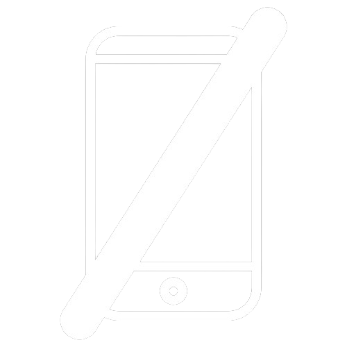
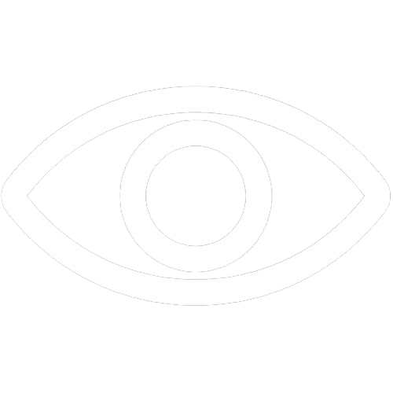

Barbearia Alura
 Ver
O site "Barbearia Alura" foi o meu primeiro projeto realizado durante um curso introdutório da Alura. Com ele, pude fundamentar vários conceitos básicos que estruturam as tecnologias HTML5 e CSS3, sem focar muito no layout das páginas criadas. *O conteúdo do site foi fornecido previamente.

Alura Plus
Ver
Dando sequencia aos cursos da Alura, pude criar um projeto, de maneira guiada, de uma landing page fictícia da Alura+, focando na utilização de grids para montar o layou do site, separando e organizando adequadamente todos os elementos presentes no projeto. *O conteúdo do site foi fornecido previamente.

Pop In Brasil
Ver
O site "Pop In Brasil" foi o primeiro projeto pessoal meu, voltado para a utilização do flexbox e de algumas funcionalidades genéricas. Foi desafiador criar tudo do zero sem ter algum exemplo pra me embasar, mas rendeu bons frutos...

Optimus Tech
Ver
O site fictício "Optimus Tech" foi um projeto voltado para a utilização do flexbox, onde pude criar, elaborar e organizar os elementos da landing-page de maneira muito mais fluida. Foi um trabalho realizado parte a parte durante sete dias de uma semana. *O conteúdo do site foi fornecido previamente.

Alura Books
Ver
O projeto "Alura Books" foi, de longe, o projeto mais desafiador durante os meus cursos. Nele, tive que utilizar todo o conhecimento agregado até o momento e direcioná-los para a criação de um site responsivo às telas de computadores e dispositivos mobile, o que acaba por ser simples, mas muito trabalhoso e cheio de detalhes. O projeto foi realizado a partir do método "mobile-first". *O conteúdo do site foi fornecido previamente.

Este site...
By - Moisés Emanuel
moisesemanuelreisdacruz@hotmail.com